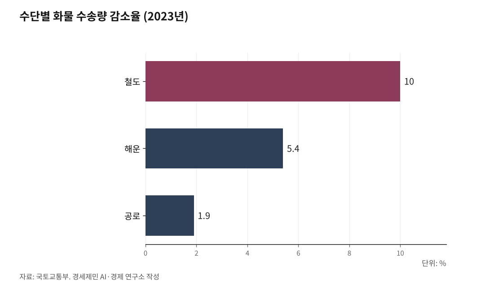

[인천항 복합물류①] 서류 한 장이 배와 철도와 트럭을 묶는다
국내 화물은 도로가 92.7%, 국제 화물은 바다가 99.7%를 나른다
16년 전 논문은 통관을 배 위에서 끝내자고 했다
AI경세제민=김갑봉 기자 | 국내에서 오가는 화물은 92.7%가 도로를 탄다. 국제로 나가는 화물은 99.7%가 바다를 탄다. 그 둘이 만나는 자리를 인천항에 놓고 복합운송이 무엇인지 사실로 짚는다.
갈아타는 자리에서 갈린다
컨테이너선이 인천항에 닿으면 크레인이 컨테이너를 내린다.
화물은 트럭에 실려 항만 문을 나선다. 여기서 길이 갈린다. 인천공항으로 가면 비행기에 오르고, 내륙기지로 가면 화물열차에 실린다. 배후단지로 들어가면 가공을 거친 뒤 길에 오른다.
인천항은 2025년 컨테이너 344만TEU를 처리했다. TEU는 길이 6m짜리 컨테이너 한 개를 세는 단위다. 2024년 356만TEU에서 3.2% 줄었고, 수출입 340만TEU, 환적 3만9000TEU다.
환적은 배를 갈아타고 다른 나라로 가는 화물이고, 수출입은 한국이 목적지이거나 출발지인 화물이다. 둘은 항만 안에서 걷는 길이 다르다.
화물이 갈아타는 자리는 인천항에 네 갈래로 놓인다. 바다에서 하늘로, 철도로, 도로로 넘어가는 세 갈래에 도심항공교통(UAM, Urban Air Mobility)이 뒤따른다. 갈아타는 자리마다 하역과 통관과 서류 처리에 시간이 든다.

서류 한 장에 책임 하나
수단을 여럿 쓴다고 모두 복합운송인 것은 아니다.
유엔 국제물품복합운송조약은 1980년 제네바에서 채택됐다. 이 조약 제1조는 복합운송을 두 가지 이상 운송수단으로 화물을 나르는 것으로 규정하고 조건을 둘 붙였다. 하나의 복합운송계약에 따라야 하고, 한 나라에서 인수한 화물을 다른 나라 인도지점까지 날라야 한다.
같은 조는 복합운송인도 규정한다. 복합운송인은 송하인이나 참여 운송인의 대리인이 아니라, 자기 이름으로 계약을 맺고 전 구간에 책임을 지는 사람이다.
책임이 하나로 묶이면 서류도 하나가 된다. 화주는 구간마다 증권을 받지 않고 복합운송증권 한 장을 받는다. 수단만 여럿이고 구간마다 책임이 나뉘면 그것은 복합운송이 아니라 연계운송이다.
이 조약은 아직 발효되지 않았다. 제36조는 30개국이 서명하거나 비준한 뒤 12개월이 지나야 효력이 생긴다고 정했다. 유엔 조약집을 보면 2026년 9월 현재 서명국 6개국, 당사국 11개국이고 한국은 어느 쪽에도 없다.
국내는 도로, 국제는 바다
국내 복합운송과 국제 복합운송은 같은 말이 아니다.
국토교통부 통계를 보면 2023년 국내 화물 수송분담률은 공로가 92.7%다. 공로는 도로를 뜻하고, 철도와 연안해운과 항공이 나머지를 나눠 맡는다.
국제 화물은 반대다. 같은 해 국제 화물의 99.7%를 해운이 날랐고 항공이 나머지를 채웠다. 2023년에는 수단을 가리지 않고 수송량이 전년보다 줄었다. 감소율은 철도 10.0%, 해운 5.4%, 공로 1.9%다.
그래서 국내에서는 도로 화물을 철도와 연안해운으로 옮기는 일이 과제가 된다. 국제에서는 바다로 들어온 화물을 어느 수단에 갈아태우느냐가 과제가 된다.
인천항에서 그 첫 구간을 맡는 것은 드레이지(drayage)다. 항만과 배후단지를 오가는 단거리 트럭 수송을 가리킨다. 철도가 항만 안까지 들어오면 이 구간을 화물열차가 대신한다.
통관을 배 위에서 하자던 제안
정태원은 2010년 한국항만경제학회지에 인천 복합운송을 다룬 논문을 실었다. 물류기업과 공공기관과 연구기관 임직원을 심층면접해 도시별 점수를 냈다.
상하이 64.8점, 홍콩 64.5점, 인천 62.9점, 부산 60.4점 차례였다.
논문은 인천에서 가장 중요한 복합운송으로 해공복합운송을 꼽았다. 바다로 들어온 화물을 인천공항에서 비행기에 싣는 방식이다. 대륙철도연계운송도 한 갈래로 놓았고, 중국횡단철도(TCR)와 시베리아횡단철도(TSR)가 그 길이다.
인천에 내놓은 방안은 둘이다. 하나는 인천과 톈진을 잇는 해공복합운송 공동물류센터를 세우고 제도를 간소화하는 협정이다. 다른 하나는 인천과 상하이 사이 해륙복합운송이다.
페리와 트럭을 잇되 통관을 선박에서 마치게 제도를 고치자고 했다. 둘 다 시설을 새로 짓자는 것이 아니라 이음매에서 걸리는 시간을 제도로 줄이자는 것이다.
탄소가 이음매를 다시 잰다
운송수단마다 내뿜는 온실가스가 크게 다르다.
기후에너지환경부 국가 온실가스 인벤토리를 보면 2022년 도로수송 배출량은 9509만3000톤이다. 수송부문 전체의 96.5%다. 같은 해 국내해운은 139만5000톤, 철도는 20만톤을 배출했다. 단위는 이산화탄소환산톤이다.
도로가 철도의 약 475배를 배출한다. 화물을 철도와 연안해운으로 옮기는 모달시프트가 여기서 나온다.
유럽연합은 2024년 1월 5000총톤 이상 선박의 이산화탄소를 배출권거래제에 넣었다. 역내 항만 사이 항해는 100%, 역외를 오가는 항해는 50%가 대상이다. 2026년부터는 메탄과 아산화질소도 들어간다.
국제해사기구(IMO)는 아직 정하지 못했다. 국제해운 탄소 가격 체계인 넷제로 프레임워크 채택을 5월 1일 끝난 해양환경보호위원회 84차 회의에서 다시 미뤘다.
실무그룹이 9월 1일부터 나흘 동안 다시 모였다. 스베이눙 오프테달 의장은 다음 회의에서 진전을 낼 뜻이 모임 안에 있다고 밝혔다.
이행 지침과 생애주기 평가 체계는 시간이 모자라 11월로 넘어갔다. 채택 여부는 11월 30일 런던에서 여는 85차 회의에서 갈린다.
복합운송을 정한 조약은 46년째 발효되지 않았고, 국제해운 탄소 가격도 아직 없다. 규범이 비어 있는 동안에도 화물은 날마다 이음매를 지난다.
※ 이 기사는 AI 프로그램 클로드를 활용해 작성했습니다.
참고문헌
가. 공식 발표자료와 공공기록
·"United Nations Convention on International Multimodal Transport of Goods (Geneva, 24 May 1980) Status", 유엔 조약집(United Nations Treaty Collection). https://treaties.un.org/doc/Publication/MTDSG/Volume%20I/Chapter%20XI/XI-E-1.en.xml
·"United Nations Convention on International Multimodal Transport of Goods (Geneva, 24 May 1980)" 조약 전문, Admiralty and Maritime Law Guide. http://www.admiraltylawguide.com/conven/multimodal1980.html
·해양수산부, "2025년 전국 항만, 물동량 15억7101만 톤 처리", 2026년 1월 29일. https://www.korea.kr/briefing/pressReleaseView.do?newsId=156741955
·"수송량 및 수송분담률", 국토교통부·지표누리(e-나라지표). https://www.index.go.kr/unity/potal/main/EachDtlPageDetail.do?idx_cd=1245
·"수송분야 부문별 온실가스 배출량 현황", 한국교통연구원. https://www.koti.re.kr/user/crbnNtrl/crbnNtrlTransportStats.do
·"Reducing emissions from the shipping sector", 유럽연합 집행위원회 기후행동총국. https://climate.ec.europa.eu/eu-action/transport/reducing-emissions-shipping-sector_en
·"IMO progresses work on ship emissions, pollution and ocean protection", 국제해사기구(IMO), 2026년 5월. https://www.imo.org/en/mediacentre/pressbriefings/pages/imo-progresses-work-on-ship-emissions-pollution-and-ocean-protection.aspx
·"Intersessional Working Group on Reduction of GHG Emissions from Ships (ISWG-GHG 22), 1-4 September 2026", 국제해사기구(IMO). https://www.imo.org/en/mediacentre/meetingsummaries/pages/iswg-ghg-22.aspx
·"인천항 연도별 물동량 현황", 인천항만공사. https://www.icpa.or.kr/mobile/main.do?menuKey=1029
나. 연구보고서와 논문
·정태원(2010), "인천지역의 복합운송체계별 발전방안 연구 - 인천과 상해이북지역 중심으로 -", 『한국항만경제학회지』, 26(1), 259-276. https://www.kci.go.kr/kciportal/ci/sereArticleSearch/ciSereArtiView.kci?sereArticleSearchBean.artiId=ART001433520
다. 언론 보도
·곽도흔, "인천항 신국제여객터미널 6월 15일 개장…인천~中 10개 도시 잇는다", 이투데이, 2020년 1월 20일. https://www.etoday.co.kr/news/view/1847243
사진 출처
· [대표사진] Unknown authorUnknown author, "Bill of lading, steamer Benton, St. Louis, July 28, 1890.jpg", 위키미디어 공용, 퍼블릭 도메인, https://commons.wikimedia.org/wiki/File:Bill_of_lading,_steamer_Benton,_St._Louis,_July_28,_1890.jpg
※ 이 기사는 인공지능을 활용해 작성했습니다.
관련기사
저작권자 © AI경세제민 무단전재 및 재배포, AI학습 및 활용 금지